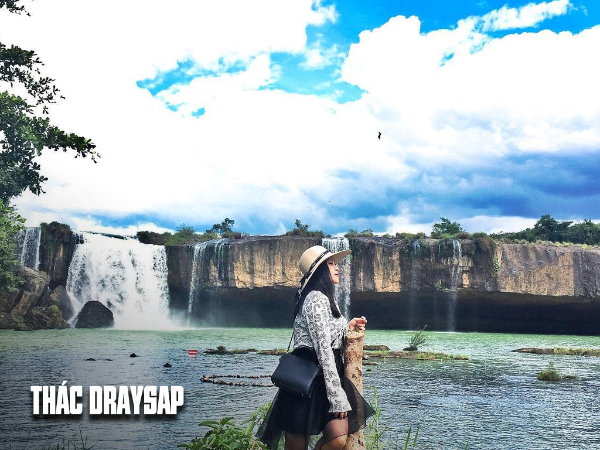

Với độ cao khoảng 50m thác Dray Sap, trải dài 100m, có thể nói đây là ngọn thác đẹp và hùng vỹ nhất khi đến với Tây Nguyên. Thác Đray Sáp ầm ầm tuôn trào suốt ngày đêm bên những vách đá sừng sững tạo nên sự hùng vĩ hiếm có của ngọn thác này. Xung quanh là khu rừng đặc dụng có giá trị sinh học cao. Thác này còn có tên gọi là thác vợ. Khác với Dray Sap thì Dray Nur nghĩa là thác cái. Dray Nur nằm ngay cạnh thác Dray Sap và chỉ cách Dray Sap một đoạn cầu treo bắt qua dòng sông Serepôk. Cả hai đều là những thác nước đẹp và hùng vĩ. Nhìn từ xa, Thác Draynur như một bức tường nước khổng lồ, hàng ngàn sợi nước tung bọt trắng xóa quấn quít, đan xen lại với nhau tạo nên một cảnh đẹp lung linh, huyền ảo. Nhìn từ độ cao hơn 30m, dòng thác nghiêng mình đổ xuống tạo nên một bức tranh thiên nhiên huyền diệu và thơ mộng va vào vách đá tạo nên những âm thành trầm bổng, dạt dào. Là ngọn thác hùng vỹ nhất trong hệ thống 3 thác: Đray Sáp, Gia Long, Trinh Nữ, thác Gia Long nằm ở thượng nguồn của sông Sêrêpôk đoạn chạy qua tỉnh Đắk Nông. Trong sự mát lạnh của những dòng nước bạn thoải mái hòa mình tắm tiên trong hồ tắm tiên rộng khoảng 80m2 và khám phá một hang động tự nhiên tuyệt đẹp.
- Thác Đraysap
- Bản Đôn
- Bảo tàng cà phê
- Bảo tàng Đak Lak
- Biệt điện Bảo Đại
- Cánh đồng quạt gió Ea Hleo
- Chùa Tứ Sắc Khải Đoan
- Hồ Eakao
- Hồ Lăk
- Núi đá voi Yangtao
- Thác Thủy Tiên
- Vườn Quốc gia Yorn Đôn